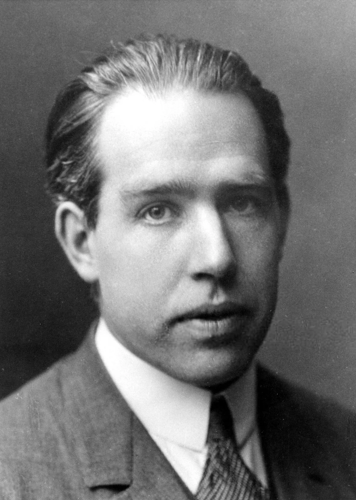
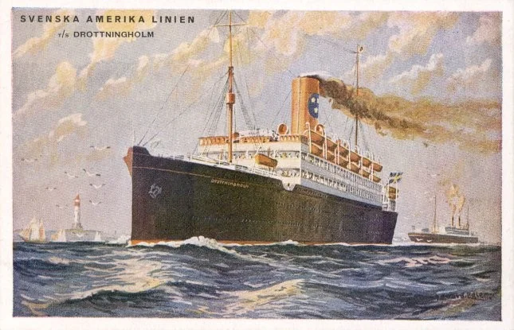
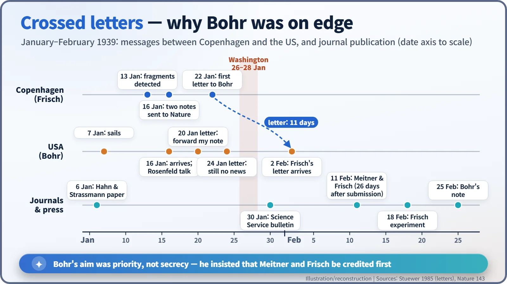
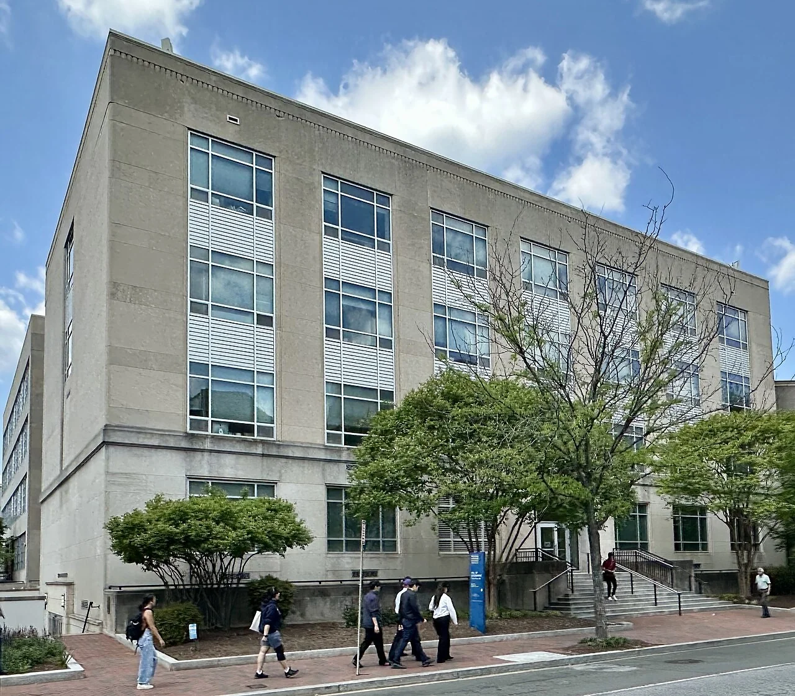
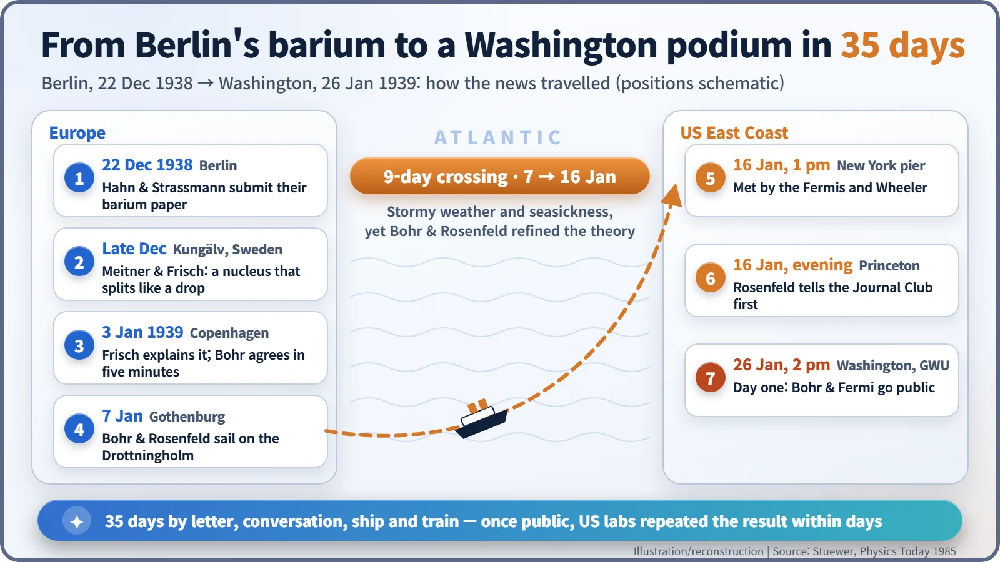

Nuclear History · 064
Two Pages in a Coat Pocket — Niels Bohr Carries the News of Fission to the 1939 Washington Conference
A nine-day stormy crossing, an unplanned seminar talk and a low-temperature physics meeting turned a pocketful of typed pages into world news.
In January 1939 Niels Bohr crossed the Atlantic on the liner Drottningholm, carrying Lise Meitner and Otto Frisch's explanation of uranium fission. A colleague told a Princeton seminar on the very evening they landed, and on 26 January Bohr and Enrico Fermi announced the discovery at a Washington conference that was supposed to be about low temperatures. Within days, laboratories across the United States were repeating the experiment.
Two pages in a coat pocket
Saturday, 7 January 1939, 10:29 a.m., a railway platform in Copenhagen. Otto Robert Frisch (1904–1979), a 34-year-old physicist, arrived with two typed pages. He had only started typing them that morning. Niels Bohr (1885–1962), about to board his train, slipped the sheets into his pocket without time to read them. That is how one of the great insights of 20th-century physics, that a uranium nucleus can split in two, set off towards the Atlantic: folded in a pocket. [1]

A trip planned long before the news
Bohr's journey had nothing to do with fission. Since early 1938 he had planned to spend a semester as a visiting professor at the Institute for Advanced Study in Princeton, and he was bringing a collaborator, the Belgian physicist Léon Rosenfeld (1904–1974). Their passage had been booked months earlier: the Swedish American Line's Drottningholm, sailing from Gothenburg, Sweden, on 7 January 1939. [1]
Meanwhile, events in Europe were moving fast. On 22 December 1938 Otto Hahn and Fritz Strassmann in Berlin submitted a paper reporting that neutron-bombarded uranium produced barium. Over Christmas in Sweden, Lise Meitner and her nephew Frisch interpreted the result as a nucleus wobbling and splitting like a liquid drop. On 3 January Frisch explained the idea to Bohr. "The conversation lasted only five minutes," Frisch wrote to Meitner that day, "since Bohr immediately and in every respect was in agreement with us." Frisch later remembered Bohr exclaiming, "Oh, what fools we have been!", but that line comes from a recollection written decades later, which also put the meeting on the wrong day. [1]

A floating seminar, with seasickness
The crossing took nine days, in bad weather all the way. "Bohr was rather miserable, all the time on the verge of seasickness," Rosenfeld recalled. "Nevertheless, we worked very steadfastly and before the American coast was in sight Bohr had got a full grasp of the new process and its main implications." [1]
The puzzle they chewed on was why splitting happened so readily. The answer came from Bohr's own picture of the compound nucleus. When a nucleus swallows a neutron, the extra energy is shared out among all its possible motions. A slow stretching into two large lumps can then compete on equal terms with, say, throwing out a single neutron. [2]
There was a catch. Before leaving, Bohr had promised Frisch that he would say nothing in America until he heard that the Meitner–Frisch note was actually in press. The point was to protect their priority. But he never mentioned this promise to Rosenfeld.
Monday evening at the Journal Club
The Drottningholm docked at the Swedish American Line pier on West 57th Street, New York, at 1 p.m. on Monday, 16 January. Enrico Fermi, who had reached New York with his family two weeks earlier, was waiting with his wife Laura, and so was John Wheeler from Princeton. Laura Fermi later remembered spotting Bohr "standing by the rails of an upper deck, leaning forward, scanning the people on the dock." [1] [3]
Rosenfeld took the train to Princeton with Wheeler. By chance, that evening was the regular Monday meeting of the physics department's Journal Club, which Wheeler ran. Asked politely whether he had anything to report, Rosenfeld, who assumed the paper had already been submitted, "told them all about the problem we had struggled with during the journey." Everybody was very excited. According to Wheeler, I. I. Rabi was in the room and carried the news back to Columbia University. [1] [2]
Bohr, arriving in Princeton a little later, was dismayed. He wrote to Frisch on 20 January and again on 24 January: "I still have not received any letter at all from the institute" (an English translation of his Danish letter). In Copenhagen, Frisch had been busy. On 13 January he detected the fission fragments directly in an experiment, and on 16 January he finished two notes for Nature. Exhausted, he did not write to Bohr until 22 January, and that letter reached Princeton only on 2 February. Frisch later apologized, admitting that "the idea of cabling to you would have appeared unmodest to me." [1]

Nuclear news at a low-temperature meeting
The decisive stage was the Fifth Washington Conference on Theoretical Physics, co-sponsored by the Carnegie Institution of Washington and George Washington University (GWU) and organized by Merle Tuve, George Gamow and Edward Teller. Its topic had nothing to do with nuclei: "magnetic, electric, and mechanical properties of matter at very low temperatures." Bohr and Fermi were added to the invitation list late. By coincidence, the formal invitations went out on 22 December 1938, the same day Hahn and Strassmann submitted their paper. [1]
The first session opened at GWU at 2 p.m. on 26 January. Before a single talk on low-temperature physics had been given, Bohr and Fermi took the floor. There was no point holding back: Hahn and Strassmann's paper had been in print since 6 January and was already circulating. The conference report called this "certainly the most exciting and important discussion," describing the splitting of uranium "into two particles each of whose mass is approximately half of the mother atom, with the release of 200,000,000 electron-volts of energy per disintegration" (about 200 MeV). It also credited the interpretation to "Frisch of Copenhagen together with Miss Meitner." The report spoke of uranium "of mass 239"; that slow-neutron fission really happens in the rare isotope uranium-235 was proposed only a few weeks later. [1] [3] [5]


Faster than the ship
From there, things moved at a sprint. Physicists left the meeting for their laboratories, and within days fission fragments had been detected at several US institutions. That race of replication experiments deserves its own story. Newspapers rushed to report it too. Once Bohr learned of Frisch's experiment, he made sure that a Science Service bulletin of 30 January gave a fair account. As he wrote to Frisch, he had stressed "most energetically" to everyone that "no public account of any such results could legitimately appear without mentioning your and your aunt's original interpretation." [1]
Meitner and Frisch's note appeared in Nature on 11 February 1939, Frisch's experimental note on 18 February, and Bohr's own note on 25 February. Bohr stayed in Princeton until May, working with Wheeler on the theory of fission. In January 1939 the news needed nine days to cross the ocean by ship. Once it landed, it took only a few days to spread across America. [1] [4]